Einführung in HTML und JavaScript
Da wir uns in der ersten Stunde darauf geeinigt haben sowohl eine Einführung in HTML als auch in JavaScript zu machen, teilen sich diese und die nächsten Vorlesungen in einen Teil HTML und einen Teil JavaScript auf. Um ein grundlegendes Verständnis für die beiden Themen zu entwickeln, haben wir die Seite Sternback Kaffee betrachtet und bearbeitet.
Struktur in HTML
Zu Beginn dieser Vorlesung haben wir uns den grundelegenden Aufbau eines HTML-Codes angeschaut. Die folgenden Abbildung zeigt eine einfache Struktur und definiert den Einsatz der verwendeten Tags:
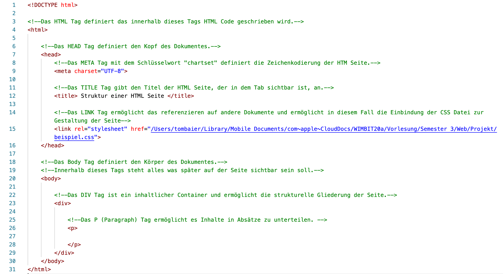
Hierbei ist noch anzumerken, dass der gezeigte Code keine Überschriften beinhaltet. Um überschriften zu erzeugen verwendet man die folgenden Tags:
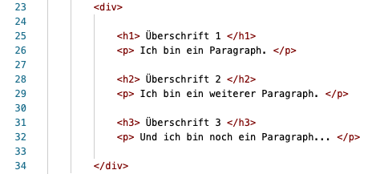
Vordefiniert unterscheiden sich die Überschriften in HTML durch die Nummern. Es handelt sich bei den Nummern also nicht um eine Nummer, die angibt um die wie vielte Überschrift es sich handelt. Stattdessen besagen die Nummer die Art der Überschrift. Wie bereits erwähnt unterscheiden sich die Überschriften durch die Nummer. Vordefiniert bildet H1 die größte Überschrift, H2 hingegen ist etwas kleiner, und so weiter... In CSS lässt sich der Style der Überschriften dann benutzerdefiniert anpassen. Somit kann zum Beispiel definiert werden, dass H1 eine andere Schriftart und/oder -farbe als H2 besitzen soll.
Grundregel für HTML Tags
Element = Start-Tag + Inhalt + End-Tag
Style in HTML
Um den Nutzer von seiner Seite zu beeindrucken, spielt der Style eine große Rolle. Denn umso schöner die Seite, desto lieber und länger besucht ein Nutzer die Seite. In HTML lässt sich der Style einer Seite mit Hilfe von CSS anpassen. CSS lässt sich entweder direkt in ein HTML-Dokument mittels des style-Attributes einfügen oder in einer externen .css Datei.
CSS via style-Attribut
Die erste Möglichkeit ist das direkte Zuweisen mittels des Universalattributes style.
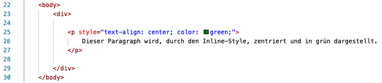
Wichtig hierbei ist, dass durch den sogenannten Inline-Style gewisse Nachteile entstehen. Zum Beispiel wird eine Wartung deutlich komplizierter, da jedes einzelne style-Attribut an ein Element gebunden ist und somit jedes Attribut einzeln angepasst werden muss.
CSS zentral in einem style-Element
Eine weiter Möglichkeit ist das Anlegen eines Styles im head des HTML-Dokumentes.
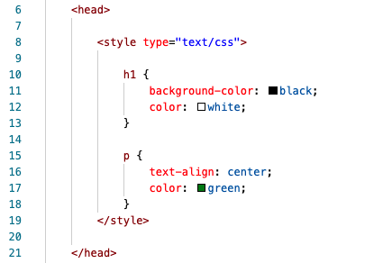
Hierbei ergibt sich der Vorteil, dass die Styles zentral definiert sind. Somit gilt, wie im oberen Beispiel, für jede H1-Überschrift, das was im head innerhalb des Tags style für H1 definiert ist. Diese Variante löst somit den Nachteil der ersten Möglichkeit. Falls Anpasungen getroffen werden müssen, ist es somit nicht von Nöten jedes einzelne H1-Element anzupassen, sondern es reicht den definiert Style einmal im head des HTML-Dokumentes anzupassen.
Hinweis: Das gerade gezeigte Beispiel definiert nun die Schriftfarbe grün und die zentrierte Ausrichtung des Textes innerhalb eines Paragraphens für alle Paragraphen. Das Beispiel davor hingegen definiert dies nur für genau diesen einen Paragraphen.
CSS via .css-Datei
In der Praxis handelt es sich sehr oft um viele verknüpfte HTML Dokumente. Dabei wird eine .css-Datei extern angelegt. Dadurch können die einzelnen HTML-Dokumente auf das im head des Dokumentes auf das externe .css "stylesheet" referenzieren. Dies geschieht mittels des Tags link und sieht wie folgt aus:
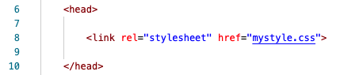
Das Attribut rel gibt hierbei den Kontext des Elements, in diesem Fall, dass es scih um ein Stylesheet handelt. Das Attribut href hingegen referenziert auf die einzubindende Datei. Diese Variante ermöglicht den Vorteil, dass der CSS-Code wie bei der Variante zuvor nur einmal geschrieben werden muss. Jedoch ergibt sich dabei ein weiterer noch größerer Vorteil, nämlich, dass dieses universelle "stylesheet" von mehreren HTML-Dokumenten genutzt werden kann.
Hinweis: Zusätzlich können Klassen definiert werden, die durch class="Name des CSS Elementes" im HTML Dokument aufgerufen werden können, um Styles an gezielten Stellen einzusetzen. Dabei steht class="Name des CSS Elementes" im Start-Tag.
HTML Kreuzworträtsel
Am Ende der ersten Einführung in HTML haben wir ein Kreuzworträtsel bearbeitet, welches die Kerninhalte der heutigen Themen nochmal verdeutlichen soll. Das gelöste Kreutzworträtsel sieht wie folgt aus:
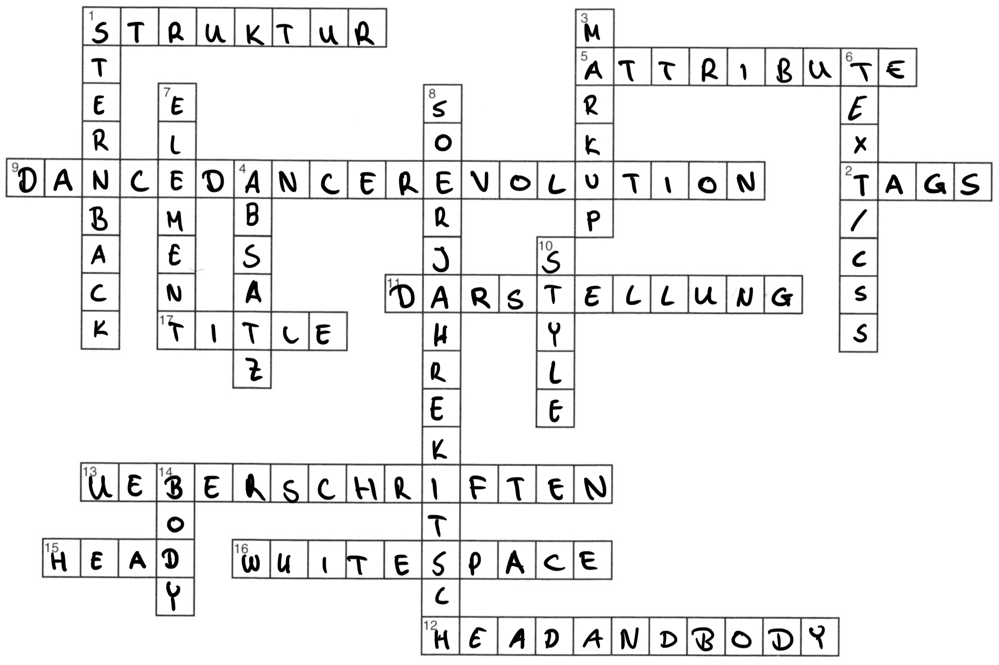
Inhalte zu JS der Vorlesung 2
Weiterhin haben wir in der zweiten Vorlesung die grundlegenden Konzepte von JavaScript besprochen. Darunter fallen das Einbinden von JavaScript(JS) in HTML, das Initialisieren und Deklarieren von Variablen, IF und ELSE Anweisungen, FOR-Schleifen und das Document Object Model (DOM) in JavaScript.
Die Einbindung von JavaScript in HTML
Für das Einbinden von JS Code in HTML Code ergeben sich, wie bei der Einbindung von CSS, mehrere Möglichkeiten. Zum einen bietet sich die Möglichkeit den JS Code direkt in ein HTML File zu schreiben. Zum anderen kann aber auch eine externe .js Datei innerhalb des HTML Codes via des script-Tags aufgerufen werden, um somit den JS Code vom HTML Code in zwei unterschiedlichen Files zu trennen.
JavaScript-Code direkt in HTML
Um JavaScript-Code direkt in eine HTML-Datei zu schreiben, wird das script-Tag und das noscript-Tag benötigt. Dabei steht innerhalb script-Tags JavaScript-Code der ausgeführt wird. Innerhalb des noscript-Tags steht Code/Text, der ausgegeben wird, falls der Nutzer JavaScript innerhalb seines Broswers verboten hat. In älteren HTML-Versionen muss dabei im script-Start-Tag noch type="text/javascript" mitgegeben werden, dies ist seit HTML5 aber nicht mehr zwingend notwendig.
Das folgende Beispiel zeigt die direkte Verwendung von JavaScript-Code in HTML:
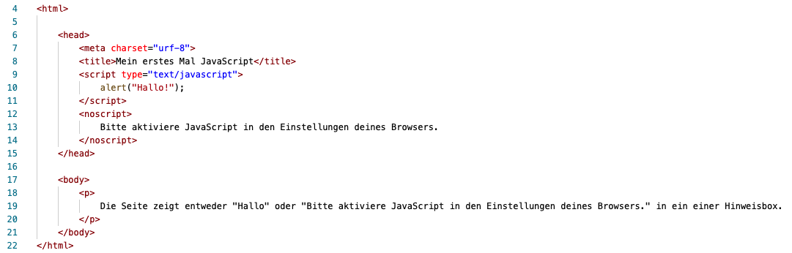
Hierbei entsteht, wie das Beispiel herausstellt, der Nachteil der Unübersichtlichkeit. Deshalb sollte man JavaScript-Code extern in einer externen .js-Datei behandeln:
Referenz auf externe JavaScript-Datei
Um extern auf eine .js-Datei zu referenzieren, muss im head des HTML-Dokumentes auf die Datei verwiesen werden. Dies sieht wie folgt aus:
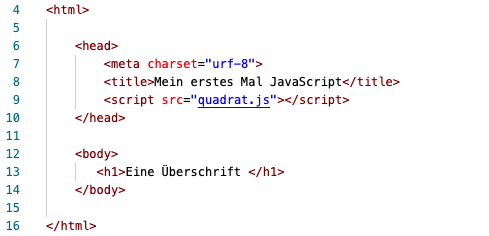
Diese Variante bietet den Vorteil, dass auf die .js-Datei nur einmal referenziert werden muss und dann Funktionen, die innerhalb dieser Datei definiert sind, aufgerufen und verwendet werden können.
Variablen
Außerdem haben wir uns mit den Fragen was ist eine Variable und wie unterscheiden sich Variablen beschäftigt. Jedoch eins nach dem anderen...
Zunächste klären wir die Frage was eine Variable in JavaScript überhaupt ist und wofür sie eingesetzt wird. Eine Variable ist ein Platzhalter, der Werte speichern kann. Der Vorteil dabei ist, dass diese Variable neue Werte annhemen kann. Definiert man also beispielsweise eine Variable namens "alter" kann diese mit Hilfe einer Funktion ihren gespeicherten Wert verändern. In diesem Beispiel würde die Variablen sich nach genau einem Jahr von 0 auf 1 erhöhen.
Nun gehen wir auf den Unterschied von Varibalen ein. Es gibt zum einen lokale Variablen und zum anderen globale Variablen. Wie der Name bereits erahnen lässt, unterscheiden diese Variablen sich in der Sichtbarkeit und im Zugriff (Nutzbarkeit). Das Schlüsselwort var macht dabei den Unterschied. Wenn dieses Schlüsselwort innerhalb einer Funktion nicht verwendet wird, so gilt die Variable nicht als lokal sondern global.
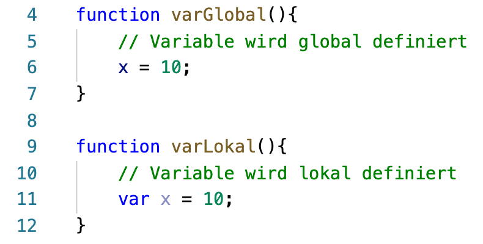
Nun stellt sich die Frage: Wieso sollte ich nicht alle Variablen global definieren? Hierbei geht es um die Übersichtlichkeit und das Verständnis des Codes. Lokale Variablen die innerhalb einer Funktion verwendet werden, sollten separiert vom Rest des Codes betrachtet werden und aus diesem Grund solllten die Variaben auch von den restlichen (globalen) Variablen getrennt werden. Ziel der Trennung ist es also die Komplexität des Codes zu reduzieren.
Funktionen
In JavaScript wird eine Funktion mittels des Schlüsselwortes function erstellt. Das folgende Beispiel zeigt das Coden einer ersten Funktion:
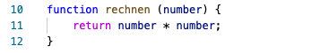Die gezeigte Funktion hat den Namen rechnen und erwartet einen Parameter, der in den runden Klammern mitgegeben wird, der number heißt. Die Anweisung, die innerhalb der Funktion in den geschweiften Klammern definiert wird, besagt das der Parameter number mit sich selbst multipliziert und durch retrun zurückgegeben wird.
Aufrufen einer Funtkion
Die eben formulierte Funktion rechnen kann wie folgt aufgerufen werden:
Da wir den Wert 5 als Parameter für die Funktion mitgegeben haben, erhalten wir somit, durch die Anweisung innerhalb unserer Funktion, das Ergebnis / den Rückgabewert 25.
Vordefinierte Funktionen
JavaScript verfügt auch über vordefinierte Funktionen, die direkt aufgerufen werden können. Drei, von uns in der Vorlesung behandelte, Beispiele dafür sind:
- parseInt()
- parseFLoat()
- eval()
Die erste Funktion parseInt() konvertiert einen String, der eine Zahl enthält, in eine Ganzzahl.
Die zweite Funktion parseFloat() ist der ersten Funktion sehr ähnlich. Die Funktion kann einen String, der eine Zahl enthählt, in eine Dezimalzahl konvertieren. Dabei ist jedoch wichtig anzufügen, dass die Funktion nur Punkt zur Trennnung der Nachkommastellen erkennt.
Die dritte Funktion eval() ist hingegen fähig JavaScript-Code der in einem String enthalten ist zu interpretieren.
Hinweis: Tatsächlich sind diese "vordefinierten Funktionen" auch nur zugänglich, da sie auf das Global-Objekt referenzieren.
IF und ELSE Anweisungen
IF ... ELSE Anweisungen funktionieren wie in Java. Und auch wie in Java ist eine else-Anweisung optional. Die Syntax sieht wie folgt aus:
if (bedingung) {anweisung1} else {anweisung2}
Im folgenden ein kleines Beispiel zum verdeutlichen wie eine Funnktion mit if und else Anweisungen in JavaScript aussehen kann:
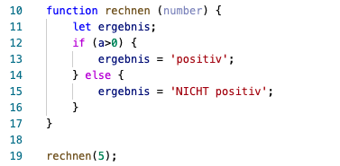Das obige Beispiel zeigt die Funktion rechnen die wir zuvor erstellt haben in abgeänderter Form. Mit dem Schlüsselwort let und dem Namen ergebnis deklarieren wir eine Variable, die nur in diesem Block gültig ist und unser Ergebnis aufnehmen soll. Das Beispiel zeigt, dass beim Aufruf der Funktion der Parameter 5 mitgegeben wird. Nun wird die Funktion rechnen mit dem Parameter 5 ausgeführt und springt in die If Anweisung. Da der der Wert 5 größer ist als 0 wird die else-Anweisung nicht mehr ausgeführt und die Variable ergebnis erhält den Wert positiv.
FOR-Schleifen
Auch for-Schleifen in JavaScript sind aufgebaut wie in Java. So sieht eine for-Schleife in JavaScript folgendermaßen aus:
for (Initialwert; Bedingung; erhöhenderAusdruck) {Anweisung(en)}
Der Initialwert definiert den Starwert der for-Schleife. Die Bedingung wird geprüft und liefert entweder den Wert true oder false. Wenn die Bedingung true ist, so werden die Anweisungen innerhalb der geschweiften Klammern ausgeführt. Die for-Schleife wird dabei solange durchlaufen bis die Bedinung falseist. Der erhöhenderAusdruck ist dabei meistens eine Operation wie zum Beispiel ein Postinkrement.
Weitere Schleifen
JavaScript verfügt zudem über weitere Modelle, die analog zu Java sind und deshalb hier nicht tiefer behandelt werden, wie zum Beispiel:
- While-Schleifen
- Do-While-Schleifen
- Switch-Case-Anweisungen
Documentation Object Model (DOM)
Das DOM ist eine Schnittstelle zwischen HTML und JavaScript. Dabei werden alle Elemente durch Objekte repräsentiert. Diese sind hierarchisch angeordent und können manipuliert werden. Damit einzelne Objekte erkann werden können werden eindeutige IDs vergeben, die das ansprechen eines spezifischen Objektes ermöglichen. JavaScript kann daraufhin durch die Punktnotation auf ein Elemt zu greifen. Dies sieht dann wie folgt aus:
var porsche911 = document.getElementById(porsche911)
Durch den sogenannten Praser werden die HTML-Elemente in einen hierarchischen Elementebaum überführt. CSS und JavaScript beziehen sich somit dann auf diesen Baum. Dabei werden einzelne Objekte des Baumes als Knoten bezeichnet. Knoten können Elemente, Attribute oder auch Texte sein. Doch wie sieht dieser hierarchische Elementebaum jetzt eigentlich aus? Beispielsweise so: